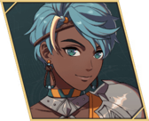

Noctula
- Chinese name
- 诺克裘拉
- Game8 tier
- A
- Used in
- Path 2: Dietrich
- Personal abilities
- Warrior's Clarity, Attuned
- Boons
- Axe, Gauntlet, Infantry
- Banes
- White Magic, Black Magic, Sword
- Likes
- The city and its people, brawling
Growth rates
| HP | Str | Mag | Spd | Dex | Def | Res | Lck | Cha |
|---|---|---|---|---|---|---|---|---|
| 50 | 45 | 20 | 45 | 40 | 40 | 20 | 35 | 30 |
Gifts they like
- Loved
- Strategy Manuscript, Tales of Adventure
- Really liked
- Eastern Tea Leaves, Protection Figurine, Sturdy Rucksack, Training Bracelet, Wing Fletching
Paired ending
Their only listed ending partner is Eshmel, who is paired elsewhere in this plan. See the Supports page to swap.
Builds
Path 2: Dietrich (Normal)
- Gladiator Beginner start
ranks: Gauntlet D / Axe D / Sword D - Pugilist Specialty Lv20
ranks: not listed by Game8 (gauntlet infantry) - Warrior Advanced Lv35
ranks: Gauntlet B / Axe B / Sword B
- Joins
- S1/R6
- Role
- Brawler
- Train
- Gauntlet to B, Axe to B.
- Gear
- Gauntlets.
- Level in
- Gladiator: HP 60% · Str 55% · Def 40%
Pugilist: HP 65% · Str 55% · Def 50%
Warrior: HP 70% · Str 65% · Def 45% - Master here
- Pugilist → Attack, Get Back (Avo +10 when using a combat art); Warrior → Practiced Art (Hit +10 when attacking with a combat art)
- Farm only
- Brigand → Regroup (Avo +20 for the combat after a foe misses); Armored Knight → Great Counter (Atk +3 when the foe attacks first)
- Equip order
- Warrior's Clarity → Attuned → Practiced Art → Regroup → Attack, Get Back → Axe or Gauntlet Lv. 3 at B+ (Hit/Avo +5)
- Why
- PlayBlackBox rates her the best brawler on Dietrich. 17173 doesn't recommend her for Part III, so this is her only real use.